suppressPackageStartupMessages({
library(IsoformSwitchAnalyzeR)
library(rtracklayer)
library(DESeq2)
library(ggVennDiagram)
library(tidyverse)
library(readr)
})Figure 3 - IsoformSwitchAnalyzeR
packageVersion('IsoformSwitchAnalyzeR')[1] '1.20.0'colorVector = c(
"Known" = "#009E73",
"ISM" = "#0072B2",
"ISM_Prefix" = "#005996",
"ISM_Suffix" = "#378bcc",
"NIC" = "#D55E00",
"NNC" = "#E69F00",
"Other" = "#000000"
)
colorVector_ismSplit = colorVector[-2]Build switch list
Make design
myDesign = tribble(
~sampleID, ~condition, ~donor,
"VZ_209", "VZ", "209",
"VZ_334", "VZ", "334",
"VZ_336", "VZ", "336",
"CP_209", "CP", "209",
"CP_334", "CP", "334",
"CP_336", "CP", "336",
) %>%
dplyr::mutate(
dplyr::across(c(condition, donor), as_factor)
)Extract Expresssion
cts = read_table("data/cp_vz_0.75_min_7_recovery_talon_abundance_filtered.tsv.gz")
── Column specification ────────────────────────────────────────────────────────
cols(
.default = col_double(),
annot_gene_id = col_character(),
annot_transcript_id = col_character(),
annot_gene_name = col_character(),
annot_transcript_name = col_character(),
gene_novelty = col_character(),
transcript_novelty = col_character(),
ISM_subtype = col_character()
)
ℹ Use `spec()` for the full column specifications.cts = cts %>%
mutate(
VZ_209 = rowSums(across(matches("209_.*_VZ"))),
VZ_334 = rowSums(across(matches("334_.*_VZ"))),
VZ_336 = rowSums(across(matches("336_.*_VZ"))),
CP_209 = rowSums(across(matches("209_.*_CP"))),
CP_334 = rowSums(across(matches("334_.*_CP"))),
CP_336 = rowSums(across(matches("336_.*_CP"))),
.keep = "unused"
) %>%
dplyr::select(!c("gene_ID", "transcript_ID", "annot_transcript_name")) %>%
dplyr::rename(
gene_id = "annot_gene_id",
transcript_id = "annot_transcript_id",
gene_name = "annot_gene_name"
) %>%
mutate(
gene_novelty = as.factor(gene_novelty),
transcript_novelty = as.factor(transcript_novelty),
ISM_subtype = ISM_subtype %>% na_if("None") %>% as.factor()
)
talonExpression = cts %>%
dplyr::select(transcript_id, starts_with(c("VZ", "CP"))) %>%
dplyr::rename(isoform_id = "transcript_id")
talonExpression# A tibble: 214,516 × 7
isoform_id VZ_209 VZ_334 VZ_336 CP_209 CP_334 CP_336
<chr> <dbl> <dbl> <dbl> <dbl> <dbl> <dbl>
1 ENST00000494149.2_2 0 0 2 0 0 0
2 ENST00000424587.2 0 0 0 0 0 2
3 ENST00000445840.1 1 1 0 0 0 0
4 ENST00000457540.1_1 0 1 1 0 0 0
5 ENST00000414273.1_1 0 0 1 0 0 0
6 ENST00000655765.1_2 0 2 0 2 1 2
7 ENST00000457084.1_2 0 2 0 0 0 0
8 ENST00000591702.1_2 1 0 2 2 0 0
9 ENST00000644482.1_1 3 0 0 0 0 0
10 ENST00000445118.7_3 1 0 0 8 0 0
# … with 214,506 more rowsCreate pre-filtered switchAnalyzeRlist
IsoformSwitchAnalyzeR will make assumptions based on whether file extension is .gtf(.gz) or .gff(.gz)… was necessary to symlink _corrected.gtf.cds.gff.
rdata_path = "data/working/talonSwitchList_preFilter.rds"
if(!file.exists(rdata_path)) {
talonSwitchList <- importRdata(
isoformCountMatrix = talonExpression,
designMatrix = myDesign,
isoformExonAnnoation = 'data/cp_vz_0.75_min_7_recovery_talon.gtf.gz',
isoformNtFasta = 'data/sqanti/cp_vz_0.75_min_7_recovery_talon_corrected.fasta.gz',
addAnnotatedORFs = FALSE,
fixStringTieAnnotationProblem = FALSE # otherwise will mess up gene_ids
)
talonSwitchList <- addORFfromGTF(
switchAnalyzeRlist = talonSwitchList,
pathToGTF = 'data/sqanti/cp_vz_0.75_min_7_recovery_talon_corrected.gtf.cds.gtf.gz'
)
talonSwitchList <- preFilter(
switchAnalyzeRlist = talonSwitchList,
geneExpressionCutoff = 1, # default
isoformExpressionCutoff = 0, # default
IFcutoff = 0.01, # default
removeSingleIsoformGenes = TRUE, # default
reduceToSwitchingGenes = FALSE, # default (we didn't run DEXSeq yet)
keepIsoformInAllConditions = TRUE # we only have 2 conditions so doesn't matter
)
saveRDS(talonSwitchList, file = rdata_path)
} else {
talonSwitchList = readRDS(rdata_path)
}
summary(talonSwitchList)This switchAnalyzeRlist list contains:
102319 isoforms from 10809 genes
1 comparison from 2 conditions (in total 6 samples)
Feature analyzed:
[1] "ntSequence, ORFs"switchPlot(
talonSwitchList,
gene='KMT2E'
)Warning in switchPlot(talonSwitchList, gene = "KMT2E"): We recomend running the
isoform switching analysis before doing the transcript plot. See
?detectIsoformSwitching for more details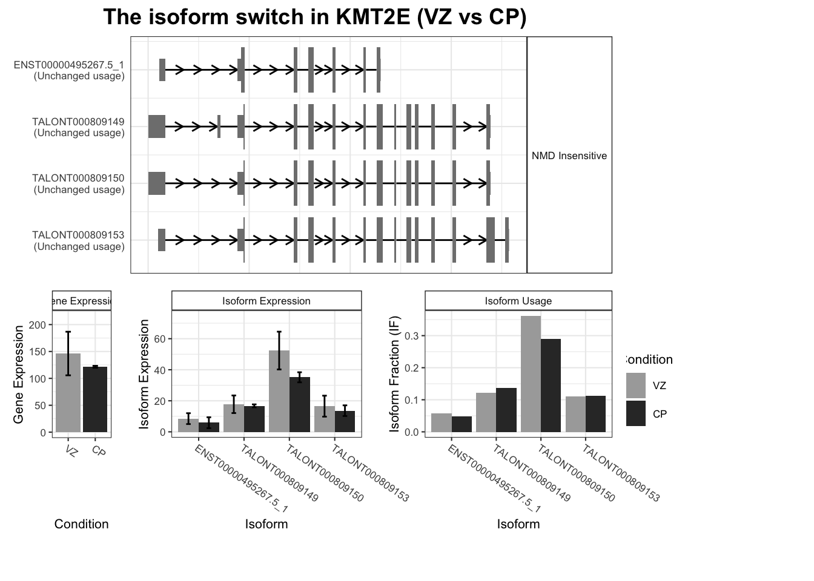
Run DESeq2
DTE
cts_preFilter = talonExpression %>% filter(isoform_id %in% talonSwitchList$isoformFeatures$isoform_id)
cts_preFilter# A tibble: 102,319 × 7
isoform_id VZ_209 VZ_334 VZ_336 CP_209 CP_334 CP_336
<chr> <dbl> <dbl> <dbl> <dbl> <dbl> <dbl>
1 ENST00000669922.1_2 4 10 4 6 9 10
2 ENST00000659124.1_2 4 0 0 9 0 0
3 ENST00000441765.6_3 1 0 0 0 1 0
4 ENST00000668541.1_2 0 0 0 5 1 5
5 ENST00000327044.7_3 283 672 708 804 820 665
6 ENST00000428771.6_3 0 1 0 0 2 0
7 ENST00000304952.10_3 0 25 41 3 5 16
8 ENST00000481869.1_2 0 6 4 2 2 6
9 ENST00000484667.2_2 0 4 5 0 0 9
10 ENST00000379370.7_2 4 12 7 9 34 8
# … with 102,309 more rowsdds = DESeqDataSetFromMatrix(
as.data.frame(cts_preFilter),
as.data.frame(myDesign),
~ donor + condition,
tidy = T
)converting counts to integer mode# takes 30sec
system.time({
dds = DESeq(dds)
})estimating size factorsestimating dispersionsgene-wise dispersion estimatesmean-dispersion relationshipfinal dispersion estimatesfitting model and testing user system elapsed
12.054 0.378 12.886 DTE_results = DESeq2::results(dds)
DTE_resultslog2 fold change (MLE): condition CP vs VZ
Wald test p-value: condition CP vs VZ
DataFrame with 102319 rows and 6 columns
baseMean log2FoldChange lfcSE stat pvalue
<numeric> <numeric> <numeric> <numeric> <numeric>
ENST00000669922.1_2 6.794078 0.3497446 0.926990 0.3772904 0.7059578
ENST00000659124.1_2 2.340796 0.1825893 1.972493 0.0925678 0.9262469
ENST00000441765.6_3 0.406806 -0.0633991 4.033013 -0.0157200 0.9874577
ENST00000668541.1_2 1.695927 3.8310438 2.135802 1.7937258 0.0728569
ENST00000327044.7_3 615.853668 0.3351470 0.261315 1.2825405 0.1996531
... ... ... ... ... ...
TALONT003163865 1.27255 2.91192 2.53106 1.150474 0.249949
TALONT003172883 1.32847 2.46363 2.50056 0.985233 0.324510
TALONT003175107 1.61344 3.01946 2.33696 1.292045 0.196342
TALONT003196342 1.10300 2.77499 2.66225 1.042347 0.297251
TALONT003225592 1.41593 1.80728 2.62236 0.689179 0.490711
padj
<numeric>
ENST00000669922.1_2 0.925055
ENST00000659124.1_2 NA
ENST00000441765.6_3 NA
ENST00000668541.1_2 NA
ENST00000327044.7_3 0.570881
... ...
TALONT003163865 NA
TALONT003172883 NA
TALONT003175107 NA
TALONT003196342 NA
TALONT003225592 NADTE_results = DTE_results %>%
as_tibble(rownames = "isoform_id") %>%
mutate(padj = replace_na(padj, 1))DGE
Mike note – lets calculate DGE for all genes (expressed) not just those in talonSwitchList_part1, which filters out genes with only 1 isoform, etc Should be ~25k
cts_gene = read_table("data/cp_vz_talon_abundance.tsv.gz") %>%
mutate(
VZ_209 = rowSums(across(matches("209_.*_VZ"))),
VZ_334 = rowSums(across(matches("334_.*_VZ"))),
VZ_336 = rowSums(across(matches("336_.*_VZ"))),
CP_209 = rowSums(across(matches("209_.*_CP"))),
CP_334 = rowSums(across(matches("334_.*_CP"))),
CP_336 = rowSums(across(matches("336_.*_CP"))),
.keep = "unused"
) %>%
group_by(annot_gene_id, annot_gene_name, gene_novelty) %>%
summarize(across(starts_with(c("VZ", "CP")), sum), .groups = "drop") %>%
dplyr::rename(
gene_id = "annot_gene_id",
gene_name = "annot_gene_name"
) %>%
mutate(gene_novelty = as.factor(gene_novelty))
── Column specification ────────────────────────────────────────────────────────
cols(
.default = col_double(),
annot_gene_id = col_character(),
annot_transcript_id = col_character(),
annot_gene_name = col_character(),
annot_transcript_name = col_character(),
gene_novelty = col_character(),
transcript_novelty = col_character(),
ISM_subtype = col_character()
)
ℹ Use `spec()` for the full column specifications.cts_gene_preFilter = cts_gene %>%
filter(gene_id %in% unique(cts$gene_id)) %>% # Filtering for those with at least one detected isoform
dplyr::select(gene_id, starts_with(c("VZ", "CP")))
cts_gene_preFilter# A tibble: 24,554 × 7
gene_id VZ_209 VZ_334 VZ_336 CP_209 CP_334 CP_336
<chr> <dbl> <dbl> <dbl> <dbl> <dbl> <dbl>
1 ENSG00000000003.15_4 443 993 812 335 483 305
2 ENSG00000000419.12_5 30 119 108 388 123 311
3 ENSG00000000457.14_6 149 300 222 192 149 148
4 ENSG00000000460.17_6 103 423 275 99 132 76
5 ENSG00000000938.13_5 0 3 10 14 4 11
6 ENSG00000000971.16_3 13 17 23 21 26 9
7 ENSG00000001036.14_4 206 243 415 163 105 205
8 ENSG00000001084.13_9 49 73 51 54 65 44
9 ENSG00000001167.14_3 184 401 249 436 525 286
10 ENSG00000001460.18_6 5 9 15 44 21 42
# … with 24,544 more rowsdds_gene = DESeqDataSetFromMatrix(
as.data.frame(cts_gene_preFilter),
as.data.frame(myDesign),
~ donor + condition,
tidy = T
)converting counts to integer mode# takes 10sec
system.time({
dds_gene = DESeq(dds_gene)
})estimating size factorsestimating dispersionsgene-wise dispersion estimatesmean-dispersion relationshipfinal dispersion estimatesfitting model and testing user system elapsed
3.582 0.118 3.735 DGE_results = DESeq2::results(dds_gene)
DGE_resultslog2 fold change (MLE): condition CP vs VZ
Wald test p-value: condition CP vs VZ
DataFrame with 24554 rows and 6 columns
baseMean log2FoldChange lfcSE stat pvalue
<numeric> <numeric> <numeric> <numeric> <numeric>
ENSG00000000003.15_4 547.45338 -1.127697 0.224974 -5.01257 5.37067e-07
ENSG00000000419.12_5 168.65442 1.554264 0.394700 3.93784 8.22188e-05
ENSG00000000457.14_6 189.49516 -0.588598 0.272137 -2.16287 3.05513e-02
ENSG00000000460.17_6 172.14571 -1.381243 0.295422 -4.67548 2.93261e-06
ENSG00000000938.13_5 6.44186 1.487234 1.237223 1.20207 2.29335e-01
... ... ... ... ... ...
TALONG000171040 7.30690 6.13371 1.58942 3.85908 0.000113814
TALONG000171269 1.51623 3.77994 2.59371 1.45735 0.145019484
TALONG000180651 3.39053 4.85165 1.95562 2.48088 0.013106017
TALONG000182469 2.31534 4.58042 2.20513 2.07717 0.037785814
TALONG000183977 1.57984 3.87094 2.55344 1.51597 0.129526613
padj
<numeric>
ENSG00000000003.15_4 6.36749e-06
ENSG00000000419.12_5 6.41440e-04
ENSG00000000457.14_6 1.04347e-01
ENSG00000000460.17_6 3.06182e-05
ENSG00000000938.13_5 4.59846e-01
... ...
TALONG000171040 0.000856288
TALONG000171269 NA
TALONG000180651 0.053168102
TALONG000182469 0.123652258
TALONG000183977 NADGE_results = DGE_results %>%
as_tibble(rownames = "gene_id") %>%
mutate(padj = replace_na(padj, 1))Switch analysis part 1
rdata_path = "data/working/talonSwitchList_part1.rds"
if (!file.exists(rdata_path)) {
### DEXSeq DTU - takes 15min
talonSwitchList_part1 <- isoformSwitchTestDEXSeq(
switchAnalyzeRlist = talonSwitchList,
reduceToSwitchingGenes = FALSE
)
### Add DTE/DGE to switchList
idx = match(talonSwitchList_part1$isoformFeatures$isoform_id, DTE_results$isoform_id)
talonSwitchList_part1$isoformFeatures$iso_q_value = DTE_results$padj[idx]
idx = match(talonSwitchList_part1$isoformFeatures$gene_id, DGE_results$gene_id)
talonSwitchList_part1$isoformFeatures$gene_q_value = DGE_results$padj[idx]
### Extract AA sequences
talonSwitchList_part1$aaSequence = NULL
isoformFeatures_part1 = talonSwitchList_part1$isoformFeatures
talonSwitchList_part1$isoformFeatures = isoformFeatures_part1 %>%
as_tibble() %>%
group_by(gene_id) %>%
mutate(
isoform_switch_q_value = if_else(any(
# our actual filtering criteria - genes with DTU, DTE, or DGE
(isoform_switch_q_value < 0.05 & dIF > 0.1) | iso_q_value < 0.05 | gene_q_value < 0.05
), 0, 1),
dIF = 1
) %>%
ungroup() %>%
as.data.frame()
talonSwitchList_part1 <- extractSequence(
switchAnalyzeRlist = talonSwitchList_part1,
pathToOutput = "data/working/IsoformSwitchAnalyzeR/",
extractNTseq = TRUE,
extractAAseq = TRUE,
removeShortAAseq = TRUE,
removeLongAAseq = FALSE,
onlySwitchingGenes = TRUE
)
talonSwitchList_part1$isoformFeatures = isoformFeatures_part1
### Save to file
saveRDS(talonSwitchList_part1, file = rdata_path)
} else {
talonSwitchList_part1 = readRDS(rdata_path)
}
summary(talonSwitchList_part1)This switchAnalyzeRlist list contains:
102319 isoforms from 10809 genes
1 comparison from 2 conditions (in total 6 samples)
Switching features:
Comparison Isoforms Switches Genes
1 VZ vs CP 1860 1073 1237
Feature analyzed:
[1] "Isoform Switch Identification, ntSequence, ORFs, aaSequence"WARNING: extractSequence() silently caches its result in switchList$aaSequence. If this object exists, extractSequence() will return the same result, no matter if you adjust alpha, dIFcutoff, or even re-run isoformSwitchTestDEXSeq().
What are the exact isoforms extractSequence() will return sequences for? (Slightly fewer if removeShortAAseq = TRUE)
orf_isoforms = talonSwitchList_part1$orfAnalysis %>% as_tibble() %>%
drop_na(orfTransciptStart) %>%
pull(isoform_id)
talonSwitchList_part1$isoformFeatures %>% as_tibble() %>%
group_by(gene_id) %>% filter(any(isoform_switch_q_value < 0.05 & abs(dIF) > 0.1)) %>% ungroup() %>%
filter(isoform_id %in% orf_isoforms)# A tibble: 12,026 × 30
iso_ref gene_…¹ isofo…² gene_id condi…³ condi…⁴ gene_…⁵ gene_…⁶ iso_b…⁷
<chr> <chr> <chr> <chr> <chr> <chr> <chr> <chr> <chr>
1 isoComp_0000… geneCo… ENST00… ENSG00… VZ CP TSPAN6 protei… protei…
2 isoComp_0000… geneCo… TALONT… ENSG00… VZ CP TSPAN6 protei… <NA>
3 isoComp_0000… geneCo… TALONT… ENSG00… VZ CP TSPAN6 protei… <NA>
4 isoComp_0000… geneCo… TALONT… ENSG00… VZ CP TSPAN6 protei… <NA>
5 isoComp_0000… geneCo… TALONT… ENSG00… VZ CP TSPAN6 protei… <NA>
6 isoComp_0000… geneCo… TALONT… ENSG00… VZ CP TSPAN6 protei… <NA>
7 isoComp_0000… geneCo… TALONT… ENSG00… VZ CP TSPAN6 protei… <NA>
8 isoComp_0000… geneCo… ENST00… ENSG00… VZ CP C1orf1… protei… protei…
9 isoComp_0000… geneCo… ENST00… ENSG00… VZ CP C1orf1… protei… protei…
10 isoComp_0000… geneCo… ENST00… ENSG00… VZ CP C1orf1… protei… protei…
# … with 12,016 more rows, 21 more variables: gene_overall_mean <dbl>,
# gene_value_1 <dbl>, gene_value_2 <dbl>, gene_stderr_1 <dbl>,
# gene_stderr_2 <dbl>, gene_log2_fold_change <dbl>, gene_q_value <dbl>,
# iso_overall_mean <dbl>, iso_value_1 <dbl>, iso_value_2 <dbl>,
# iso_stderr_1 <dbl>, iso_stderr_2 <dbl>, iso_log2_fold_change <dbl>,
# iso_q_value <dbl>, IF_overall <dbl>, IF1 <dbl>, IF2 <dbl>, dIF <dbl>,
# isoform_switch_q_value <dbl>, gene_switch_q_value <dbl>, PTC <lgl>, and …Table S3
What genes does IsoformSwitchAnalyzeR think are significant?
extractTopSwitches(
talonSwitchList_part1, filterForConsequences = FALSE, n=Inf
) %>% as_tibble()# A tibble: 1,237 × 7
gene_ref gene_id gene_…¹ condi…² condi…³ gene_sw…⁴ Rank
<chr> <chr> <chr> <chr> <chr> <dbl> <int>
1 geneComp_00001085 ENSG00000073584.20… SMARCE1 VZ CP 1.03e-211 1
2 geneComp_00000969 ENSG00000070087.14… PFN2 VZ CP 6.32e-118 2
3 geneComp_00008384 ENSG00000155849.15… ELMO1 VZ CP 3.74e-116 3
4 geneComp_00000525 ENSG00000044115.21… CTNNA1 VZ CP 3.84e-103 4
5 geneComp_00005804 ENSG00000133884.10… DPF2 VZ CP 4.94e- 95 5
6 geneComp_00020536 ENSG00000263001.6_6 GTF2I VZ CP 9.35e- 94 6
7 geneComp_00001542 ENSG00000087274.17… ADD1 VZ CP 2.19e- 85 7
8 geneComp_00003418 ENSG00000111667.13… USP5 VZ CP 6.38e- 83 8
9 geneComp_00004817 ENSG00000124783.14… SSR1 VZ CP 2.45e- 80 9
10 geneComp_00000441 ENSG00000033627.16… ATP6V0… VZ CP 4.61e- 74 10
# … with 1,227 more rows, and abbreviated variable names ¹gene_name,
# ²condition_1, ³condition_2, ⁴gene_switch_q_valuetalonSwitchList_part1$isoformFeatures %>% as_tibble() %>%
group_by(gene_ref, gene_id, gene_name, condition_1, condition_2, gene_switch_q_value) %>%
filter(any(isoform_switch_q_value < 0.05 & abs(dIF) > 0.1)) %>%
summarize() %>%
arrange(gene_switch_q_value)`summarise()` has grouped output by 'gene_ref', 'gene_id', 'gene_name',
'condition_1', 'condition_2'. You can override using the `.groups` argument.# A tibble: 1,237 × 6
# Groups: gene_ref, gene_id, gene_name, condition_1, condition_2 [1,237]
gene_ref gene_id gene_name conditio…¹ condi…² gene_sw…³
<chr> <chr> <chr> <chr> <chr> <dbl>
1 geneComp_00001085 ENSG00000073584.20_8 SMARCE1 VZ CP 1.03e-211
2 geneComp_00000969 ENSG00000070087.14_5 PFN2 VZ CP 6.32e-118
3 geneComp_00008384 ENSG00000155849.15_4 ELMO1 VZ CP 3.74e-116
4 geneComp_00000525 ENSG00000044115.21_7 CTNNA1 VZ CP 3.84e-103
5 geneComp_00005804 ENSG00000133884.10_4 DPF2 VZ CP 4.94e- 95
6 geneComp_00020536 ENSG00000263001.6_6 GTF2I VZ CP 9.35e- 94
7 geneComp_00001542 ENSG00000087274.17_6 ADD1 VZ CP 2.19e- 85
8 geneComp_00003418 ENSG00000111667.13_4 USP5 VZ CP 6.38e- 83
9 geneComp_00004817 ENSG00000124783.14_6 SSR1 VZ CP 2.45e- 80
10 geneComp_00000441 ENSG00000033627.16_4 ATP6V0A1 VZ CP 4.61e- 74
# … with 1,227 more rows, and abbreviated variable names ¹condition_1,
# ²condition_2, ³gene_switch_q_valueWhat transcripts does IsoformSwitchAnalyzeR think are significant?
extractTopSwitches(
talonSwitchList_part1, extractGenes = FALSE, filterForConsequences = FALSE, n=Inf
) %>% as_tibble()Warning in .fun(piece, ...): Less than n genes genes with significant switches
were found. Returning those.# A tibble: 1,860 × 12
iso_ref gene_…¹ isofo…² gene_id gene_…³ condi…⁴ condi…⁵ IF1 IF2 dIF
<chr> <chr> <chr> <chr> <chr> <chr> <chr> <dbl> <dbl> <dbl>
1 isoComp_0… geneCo… ENST00… ENSG00… SMARCE1 VZ CP 0.57 0.164 -0.405
2 isoComp_0… geneCo… ENST00… ENSG00… PFN2 VZ CP 0.25 0.021 -0.228
3 isoComp_0… geneCo… ENST00… ENSG00… ELMO1 VZ CP 0.404 0.024 -0.38
4 isoComp_0… geneCo… ENST00… ENSG00… CTNNA1 VZ CP 0.541 0.129 -0.413
5 isoComp_0… geneCo… ENST00… ENSG00… DPF2 VZ CP 0.082 0.553 0.47
6 isoComp_0… geneCo… ENST00… ENSG00… GTF2I VZ CP 0.128 0.017 -0.111
7 isoComp_0… geneCo… TALONT… ENSG00… ADD1 VZ CP 0.31 0.059 -0.251
8 isoComp_0… geneCo… ENST00… ENSG00… CTNNA1 VZ CP 0.124 0.32 0.197
9 isoComp_0… geneCo… ENST00… ENSG00… USP5 VZ CP 0.314 0.693 0.379
10 isoComp_0… geneCo… ENST00… ENSG00… USP5 VZ CP 0.561 0.185 -0.376
# … with 1,850 more rows, 2 more variables: isoform_switch_q_value <dbl>,
# Rank <int>, and abbreviated variable names ¹gene_ref, ²isoform_id,
# ³gene_name, ⁴condition_1, ⁵condition_2talonSwitchList_part1$isoformFeatures %>% as_tibble() %>%
filter(isoform_switch_q_value < 0.05 & abs(dIF) > 0.1) %>%
dplyr::select(iso_ref, gene_ref, isoform_id, gene_id, gene_name, condition_1, condition_2, IF1, IF2, dIF, isoform_switch_q_value) %>%
arrange(isoform_switch_q_value)# A tibble: 1,860 × 11
iso_ref gene_…¹ isofo…² gene_id gene_…³ condi…⁴ condi…⁵ IF1 IF2 dIF
<chr> <chr> <chr> <chr> <chr> <chr> <chr> <dbl> <dbl> <dbl>
1 isoComp… geneCo… ENST00… ENSG00… SMARCE1 VZ CP 0.570 0.164 -0.405
2 isoComp… geneCo… ENST00… ENSG00… PFN2 VZ CP 0.250 0.0213 -0.228
3 isoComp… geneCo… ENST00… ENSG00… ELMO1 VZ CP 0.404 0.0237 -0.380
4 isoComp… geneCo… ENST00… ENSG00… CTNNA1 VZ CP 0.541 0.129 -0.413
5 isoComp… geneCo… ENST00… ENSG00… DPF2 VZ CP 0.0823 0.553 0.470
6 isoComp… geneCo… ENST00… ENSG00… GTF2I VZ CP 0.128 0.0167 -0.111
7 isoComp… geneCo… TALONT… ENSG00… ADD1 VZ CP 0.310 0.059 -0.251
8 isoComp… geneCo… ENST00… ENSG00… CTNNA1 VZ CP 0.124 0.320 0.197
9 isoComp… geneCo… ENST00… ENSG00… USP5 VZ CP 0.314 0.693 0.379
10 isoComp… geneCo… ENST00… ENSG00… USP5 VZ CP 0.561 0.185 -0.376
# … with 1,850 more rows, 1 more variable: isoform_switch_q_value <dbl>, and
# abbreviated variable names ¹gene_ref, ²isoform_id, ³gene_name,
# ⁴condition_1, ⁵condition_2Create our Table S3
Note: isoformSwitchAnalyzer uses both q-value (<.05) and effect size cutoff |dIF>.1| for DTU calling. Lets remove the dIF effect size cutoff here so that we can directly compare DGE, DTE, and DTU genes in the Venn Diagram below
tableS3 = talonSwitchList_part1$isoformFeatures %>%
as_tibble() %>%
dplyr::select(isoform_id, gene_id, gene_name, condition_1, condition_2) %>%
left_join(
talonSwitchList_part1$isoformSwitchAnalysis %>% dplyr::select(isoform_id, dIF, pvalue, padj)
) %>%
dplyr::rename(
DTU_dIF = "dIF",
DTU_pval = "pvalue",
DTU_qval = "padj"
) %>%
mutate(
DTU = DTU_qval < 0.05 # & abs(DTU_dIF) > 0.1
) %>%
left_join(
DTE_results %>% dplyr::select(isoform_id, log2FoldChange, pvalue, padj)
) %>%
dplyr::rename(
DTE_log2FC = "log2FoldChange",
DTE_pval = "pvalue",
DTE_qval = "padj"
) %>%
mutate(
DTE = DTE_qval < 0.05
) %>%
left_join(
DGE_results %>% dplyr::select(gene_id, log2FoldChange, pvalue, padj)
) %>%
dplyr::rename(
DGE_log2FC = "log2FoldChange",
DGE_pval = "pvalue",
DGE_qval = "padj"
) %>%
mutate(
DGE = DGE_qval < 0.05
)Joining with `by = join_by(isoform_id)`
Joining with `by = join_by(isoform_id)`
Joining with `by = join_by(gene_id)`tableS3# A tibble: 102,319 × 17
isoform_id gene_id gene_…¹ condi…² condi…³ DTU_dIF DTU_pval DTU_qval DTU
<chr> <chr> <chr> <chr> <chr> <dbl> <dbl> <dbl> <lgl>
1 ENST0000037… ENSG00… TSPAN6 VZ CP -0.347 4.89e-14 9.84e-12 TRUE
2 TALONT00074… ENSG00… TSPAN6 VZ CP 0.140 1.42e- 8 1.23e- 6 TRUE
3 TALONT00074… ENSG00… TSPAN6 VZ CP 0.196 1.36e- 6 7.89e- 5 TRUE
4 TALONT00074… ENSG00… TSPAN6 VZ CP 0.00667 6.29e- 1 9.24e- 1 FALSE
5 TALONT00074… ENSG00… TSPAN6 VZ CP -0.00633 4.95e- 1 8.74e- 1 FALSE
6 TALONT00074… ENSG00… TSPAN6 VZ CP -0.00867 1.89e- 1 6.47e- 1 FALSE
7 TALONT00074… ENSG00… TSPAN6 VZ CP 0.017 1.48e- 3 3.08e- 2 TRUE
8 ENST0000037… ENSG00… DPM1 VZ CP -0.0317 8.43e- 1 9.76e- 1 FALSE
9 ENST0000037… ENSG00… DPM1 VZ CP -0.0273 2.34e- 1 7.00e- 1 FALSE
10 ENST0000037… ENSG00… DPM1 VZ CP 0.0993 1.48e- 1 5.89e- 1 FALSE
# … with 102,309 more rows, 8 more variables: DTE_log2FC <dbl>, DTE_pval <dbl>,
# DTE_qval <dbl>, DTE <lgl>, DGE_log2FC <dbl>, DGE_pval <dbl>,
# DGE_qval <dbl>, DGE <lgl>, and abbreviated variable names ¹gene_name,
# ²condition_1, ³condition_2tableS3 %>% write_tsv("output/tables/TableS3_v3.tsv.gz")
tableS3b_geneLevel = tableS3 %>%
group_by(gene_name, gene_id) %>%
summarize(
DTU = any(DTU), DTE = any(DTE), DGE = any(DGE),
DTU_qval_min = min(DTU_qval), DTU_pval_min = min(DTU_pval),
DTE_qval_min = min(DTE_qval), DTE_pval_min = min(DTE_pval),
DGE_pval = min(DGE_pval), DGE_qval = min(DGE_qval)
)`summarise()` has grouped output by 'gene_name'. You can override using the
`.groups` argument.tableS3b_geneLevel %>% write_tsv("output/tables/TableS3b_geneLevel.tsv.gz")Note: log2fc in switchlist are based on the calculated RPKM values, not raw counts, so they don’t agree with DESEq2 log2fc columns.
Sanity check: The isoform_switch_q_value column in switchList\(isoformFeatures comes from the padj column in switchList\)isoformSwitchAnalysis (which is the DEXSeq results). gene_switch_q_value is just the minimum padj of any isoform for that gene.
left_join(
talonSwitchList_part1$isoformFeatures %>% as_tibble(),
talonSwitchList_part1$isoformSwitchAnalysis %>% as_tibble(),
by = "isoform_id"
) %>%
filter(isoform_switch_q_value != padj)# A tibble: 0 × 39
# … with 39 variables: iso_ref.x <chr>, gene_ref.x <chr>, isoform_id <chr>,
# gene_id <chr>, condition_1.x <chr>, condition_2.x <chr>, gene_name <chr>,
# gene_biotype <chr>, iso_biotype <chr>, gene_overall_mean <dbl>,
# gene_value_1 <dbl>, gene_value_2 <dbl>, gene_stderr_1 <dbl>,
# gene_stderr_2 <dbl>, gene_log2_fold_change <dbl>, gene_q_value <dbl>,
# iso_overall_mean <dbl>, iso_value_1 <dbl>, iso_value_2 <dbl>,
# iso_stderr_1 <dbl>, iso_stderr_2 <dbl>, iso_log2_fold_change <dbl>, …left_join(
talonSwitchList_part1$isoformFeatures %>% as_tibble(),
talonSwitchList_part1$isoformSwitchAnalysis %>% as_tibble(),
by = "isoform_id"
) %>%
group_by(gene_id) %>%
filter(gene_switch_q_value != min(padj))# A tibble: 0 × 39
# Groups: gene_id [0]
# … with 39 variables: iso_ref.x <chr>, gene_ref.x <chr>, isoform_id <chr>,
# gene_id <chr>, condition_1.x <chr>, condition_2.x <chr>, gene_name <chr>,
# gene_biotype <chr>, iso_biotype <chr>, gene_overall_mean <dbl>,
# gene_value_1 <dbl>, gene_value_2 <dbl>, gene_stderr_1 <dbl>,
# gene_stderr_2 <dbl>, gene_log2_fold_change <dbl>, gene_q_value <dbl>,
# iso_overall_mean <dbl>, iso_value_1 <dbl>, iso_value_2 <dbl>,
# iso_stderr_1 <dbl>, iso_stderr_2 <dbl>, iso_log2_fold_change <dbl>, …Fig3
Fig3a: Volcano Plots
cts$novelty2 = as.character(cts$transcript_novelty)
cts$novelty2[which(cts$novelty2=="ISM" & cts$ISM_subtype=="Prefix")] = "ISM_Prefix"
cts$novelty2[which(cts$novelty2=="ISM" & cts$ISM_subtype=="Suffix")] = "ISM_Suffix"
cts$novelty2[cts$novelty2 %in% c("Antisense", "Genomic", "Intergenic", "ISM")] = "Other"
cts$novelty2 = factor(cts$novelty2,levels=c("Known", "ISM_Prefix", "ISM_Suffix", "NIC", "NNC", "Other"))
data_to_label1 = talonSwitchList_part1$isoformFeatures %>%
filter((-log10(isoform_switch_q_value) > 50 & (abs(dIF) > .1)) |
(abs(dIF) > .5 & isoform_switch_q_value < 1e-10))
data_to_label2 = talonSwitchList_part1$isoformFeatures %>%
filter(isoform_switch_q_value < .05, gene_name %in% c("SRRM1", "PTBP2", "ELAVL2", "ELAVL4", "RBFOX2","NF1", "TSC2", "UBE3A", "KMT2E", "KMT5B", "SMARCD3", "SMARCA1", "FOXP2", "GRIA3", "VAMP1", "GAD1", "NLGN4X", "NRXN1")) %>% group_by(gene_name) %>% slice_max(n = 1, abs(dIF))
data_to_label <- bind_rows(data_to_label1,data_to_label2)
Fig3a = ggplot(data=talonSwitchList_part1$isoformFeatures %>% left_join(cts %>% dplyr::select(isoform_id=transcript_id, novelty=novelty2)),
aes(x=dIF, y=-log10(isoform_switch_q_value))) +
geom_point(
aes(color=novelty), # default cutoff
size=2, alpha=.5) +
geom_hline(yintercept = -log10(0.05), linetype='dashed',color='red') + # default cutoff
labs(x='difference in isoform fraction (dIF)', y='-log10 ( Isoform Switch Q Value )') +
theme_bw() + xlim(-1,1) + scale_color_manual(values=colorVector_ismSplit) +
ggrepel::geom_text_repel(data = data_to_label %>% filter(dIF < 0),aes(label=gene_name, segment.size = .1),size=3,force = 10, max.overlaps = 50,nudge_y = 10, nudge_x = -.2) +
ggrepel::geom_text_repel(data = data_to_label %>% filter(dIF > 0),aes(label=gene_name, segment.size = .1),size=3,force = 10, max.overlaps = 50,nudge_y = 10, nudge_x = .2) + theme(legend.position = 'none') + geom_vline(xintercept = 0,lty=1,color='darkgrey')Joining with `by = join_by(isoform_id)`Fig3aWarning: Removed 4 rows containing missing values (`geom_point()`).Warning: Removed 1 rows containing missing values (`geom_text_repel()`).ggsave(Fig3a, file="output/figures/Fig3/Fig3a.pdf",width=6,height=4)Warning: Removed 4 rows containing missing values (`geom_point()`).
Removed 1 rows containing missing values (`geom_text_repel()`).Fig3a.fg = ggplot(data=talonSwitchList_part1$isoformFeatures %>% left_join(cts %>% dplyr::select(isoform_id=transcript_id, novelty=novelty2)),
aes(x=dIF, y=-log10(isoform_switch_q_value))) +
geom_point(
aes(color=novelty), color=NA, # default cutoff
size=2, alpha=.5) +
geom_hline(yintercept = -log10(0.05), linetype='dashed',color='red') + # default cutoff
labs(x='difference in isoform fraction (dIF)', y='-log10 ( Isoform Switch Q Value )') +
theme_bw() + xlim(-1,1) + scale_color_manual(values=colorVector_ismSplit) +
ggrepel::geom_text_repel(data = data_to_label %>% filter(dIF < 0),aes(label=gene_name, segment.size = .1),size=3,force = 10, max.overlaps = 50,nudge_y = 10, nudge_x = -.2) +
ggrepel::geom_text_repel(data = data_to_label %>% filter(dIF > 0),aes(label=gene_name, segment.size = .1),size=3,force = 10, max.overlaps = 50,nudge_y = 10, nudge_x = .2)+theme(legend.position = 'none') + geom_vline(xintercept = 0,lty=1,color='darkgrey')Joining with `by = join_by(isoform_id)`Fig3a.fgWarning: Removed 102319 rows containing missing values (`geom_point()`).
Removed 1 rows containing missing values (`geom_text_repel()`).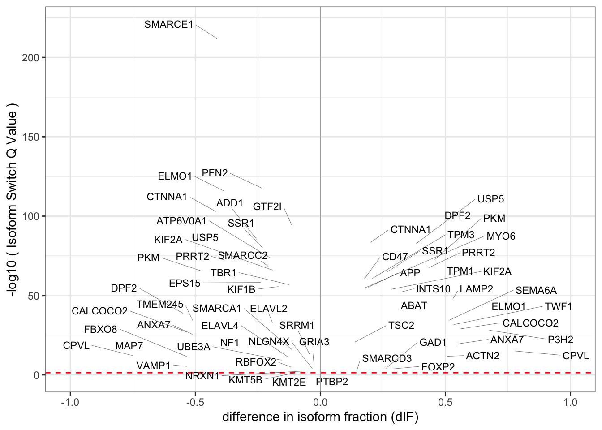
ggsave(Fig3a.fg, file="output/figures/Fig3/Fig3a_fg.pdf",width=6,height=4)Warning: Removed 102319 rows containing missing values (`geom_point()`).
Removed 1 rows containing missing values (`geom_text_repel()`).Fig3a.bg =ggplot(data=talonSwitchList_part1$isoformFeatures %>% left_join(cts %>% dplyr::select(isoform_id=transcript_id, novelty=novelty2)),
aes(x=dIF, y=-log10(isoform_switch_q_value))) +
geom_point(
aes(color=novelty), # default cutoff
size=2, alpha=.5) + scale_color_manual(values=colorVector_ismSplit) + theme_void() + theme(legend.position = 'none')Joining with `by = join_by(isoform_id)`ggsave(Fig3a.bg, file="output/figures/Fig3/Fig3a_bg.jpg",width=6,height=4)Warning: Removed 4 rows containing missing values (`geom_point()`).Fig3a_2: Pie Chart
this_df = talonSwitchList_part1$isoformFeatures %>%
left_join(cts %>% dplyr::select(isoform_id=transcript_id, novelty=novelty2)) %>%
filter(isoform_switch_q_value < .05) %>% group_by(novelty) %>% summarise(switches=n_distinct(isoform_id))Joining with `by = join_by(isoform_id)`this_df<-this_df %>% arrange(desc(novelty)) %>%
mutate(prop = switches / sum(switches) *100) %>%
mutate(ypos = cumsum(prop)- 0.5*prop )
Fig3a_part2 = ggplot(this_df, aes(x="", y=prop, fill=novelty)) +
geom_bar(stat="identity", width=1, color="white") +
coord_polar("y",start=0) +
theme_void() + theme(legend.position = 'none', plot.title = element_text(hjust=.5)) +
scale_fill_manual(values=colorVector_ismSplit) +
geom_text(aes(y=ypos, label = paste0(novelty,"\n(N=", switches, ")")), color = "white", size=5)
Fig3a_part2 ggsave(Fig3a_part2, file="output/figures/Fig3/Fig3a_part2.pdf",width=4,height=4)Fig3b: DGE vs DTU plots
this_df = talonSwitchList_part1$isoformFeatures %>%
left_join(cts %>% dplyr::select(isoform_id=transcript_id, novelty=novelty2))Joining with `by = join_by(isoform_id)`this_df$gene_q_value = DGE_results$padj[match(this_df$gene_id, DGE_results$gene_id)]
Fig3b = ggplot(data=this_df,
aes(x=gene_log2_fold_change, y=dIF)) +
geom_point(
aes(color=abs(dIF) > 0.1 & isoform_switch_q_value < 0.05, # default cutoff
shape = abs(gene_log2_fold_change) > .1 & gene_q_value < .05),
size=1, alpha=.5,
) +
geom_hline(yintercept = 0, linetype='dashed') + # default cutoff
geom_vline(xintercept =0, linetype='dashed') + # default cutoff
labs(y='difference in isoform fraction (dIF)', x='Gene log2FC') +
theme_bw() + xlim(-5,5)+
scale_color_manual('Signficant\nIsoform Switch', values = c('black','red')) +
scale_shape_manual('Signficant\nDGE', values = c("FALSE"=1, "TRUE"=16)) +
ggrepel::geom_text_repel(data = talonSwitchList_part1$isoformFeatures %>% filter(abs(dIF) > .5 & isoform_switch_q_value < 0.05), aes(label=gene_name),size=3, max.overlaps = 20)
Fig3bWarning: Removed 31 rows containing missing values (`geom_point()`).Warning: Removed 1 rows containing missing values (`geom_text_repel()`).Warning: ggrepel: 4 unlabeled data points (too many overlaps). Consider
increasing max.overlaps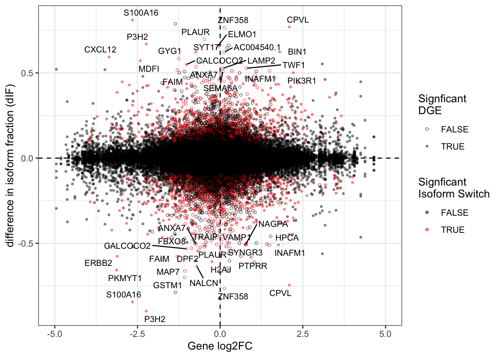
ggsave(Fig3b, file="output/figures/Fig3/Fig3b.pdf",width=8,height=5)Warning: Removed 31 rows containing missing values (`geom_point()`).Warning: Removed 1 rows containing missing values (`geom_text_repel()`).Warning: ggrepel: 2 unlabeled data points (too many overlaps). Consider
increasing max.overlaps## DGE Volcano plot colored by DTU
this_df = DGE_results %>% left_join(cts_gene %>% dplyr::select(gene_id, gene_name)) %>%
left_join(tableS3 %>% dplyr::select(gene_id, DTU) %>% group_by(gene_id) %>% summarise(DTU = any(DTU)))Joining with `by = join_by(gene_id)`
Joining with `by = join_by(gene_id)`this_df$DTU[is.na(this_df$DTU)] = F
this_df$DTU = factor(this_df$DTU, levels=c("TRUE", "FALSE"))
ggplot(this_df %>% filter(DTU==FALSE), aes(x=log2FoldChange, y=-log10(padj))) + geom_point(alpha=.25, color='grey') + geom_point(data=this_df %>% filter(DTU==TRUE), alpha=.5, color='red') + theme_bw()Fig3c: Venn Diagrams
gene_overlaps = tableS3 %>% group_by(gene_id) %>% summarise(DTE = any(DTE), DGE=any(DGE), DTU=any(DTU)) %>% dplyr::select(-gene_id)
# Sanity check: 2,679 of 10809 genes with DTU (iso_q_value< .05)
switches=extractTopSwitches(
talonSwitchList_part1, extractGenes = TRUE, dIFcutoff = 0, filterForConsequences = FALSE, n=Inf
) %>% as_tibble()
table(gene_overlaps$DTU)
FALSE TRUE
8130 2679 # Gene-level DGE: 4475 of 24554 -- note different backgrounds
table(DGE_results$padj < .05)
FALSE TRUE
20079 4475 # Fisher's Exact Test
source(file = "code/fisher_overlap.R")
ORA(tableS3$gene_id[tableS3$DTU_qval<.05],DGE_results$gene_id[DGE_results$padj<.05], tableS3$gene_id, DGE_results$gene_id) OR Fisher p -95%CI
"2.00059991005475" "1.21479676549559e-46" "1.81968255413102"
+95%CI Overlap Reference List
"2.19910780950278" "1010" "2898"
Input List Background % List Overlap
"2679" "10809" "34.9" # 1411 isoform-switching genes without even nominally significant evidence of DGE
length(intersect(tableS3$gene_id[tableS3$DTU_qval<.05], DGE_results$gene_id[DGE_results$pvalue>.05]))[1] 1411Fig3c = ggVennDiagram(list(DTU = which(gene_overlaps$DTU),
DGE = which(gene_overlaps$DGE),
DTE = which(gene_overlaps$DTE))) +
scale_fill_gradient(low="grey",high = "red")
Fig3cggsave(Fig3c, file="output/figures/Fig3/Fig3c.pdf",width=8,height=5)Switch analysis part 2 (functional consequences)
IUPred and SignalP are difficult to run. Non-webserver IUPred2A/3 only takes a single sequence at a time, so requires a wrapper. Although “V5 is supported” for SignalP (I guess through the webserver?) v5.0 and v6.0 no longer seem to produce the expected output (-f summary) of v4.1.
Currently, trying to import from the webtools_v3 crashes R.
rdata_path = "data/working/talonSwitchList_part2.rds"
if (!file.exists(rdata_path)) {
talonSwitchList_part2 <- isoformSwitchAnalysisPart2(
switchAnalyzeRlist = talonSwitchList_part1,
n = 10, # number of PDF plots to generate
removeNoncodinORFs = FALSE,
pathToCPC2resultFile = "data/working/IsoformSwitchAnalyzeR_webtools_v4/result_cpc2.txt",
pathToPFAMresultFile = "data/working/IsoformSwitchAnalyzeR_webtools_v4/result_pfam_scan.txt",
# might want to disable smoothing through `analyzeIUPred2A` since IUPred3 now
# performs smoothing:
pathToIUPred2AresultFile = "data/working/IsoformSwitchAnalyzeR_webtools_v4/result_iupred3.txt.gz",
pathToSignalPresultFile = "data/working/IsoformSwitchAnalyzeR_webtools_v4/result_signalP.txt",
pathToOutput = "output/IsoformSwitchAnalyzeR/",
outputPlots = T
)
# todo - split this into individual functions because `analyzeSwitchConsequences`
# is still filtering on dIF in addition to qval
talonSwitchList_part2 <- analyzeSwitchConsequences(talonSwitchList_part2, onlySigIsoforms = T, dIFcutoff = 0, consequencesToAnalyze = c('tss','tts','last_exon','isoform_length','exon_number','intron_structure','ORF_length', '5_utr_seq_similarity', '5_utr_length', '3_utr_seq_similarity', '3_utr_length','coding_potential','ORF_seq_similarity','NMD_status','domains_identified','signal_peptide_identified'))
saveRDS(talonSwitchList_part2, file=rdata_path)
} else {
talonSwitchList_part2 = readRDS(rdata_path)
}Plot a gene:
pdf(file="output/figures/Fig3/Fig3_SMARCC2.pdf", height=4, width=8)
switchPlot(
talonSwitchList_part2,dIFcutoff = .1,logYaxis = TRUE,
gene='SMARCC2'
)
dev.off()quartz_off_screen
2 pdf(file="output/figures/Fig4/FigS4_NF1.pdf", height=4, width=6)
switchPlot(
talonSwitchList_part2,dIFcutoff = .1,logYaxis = TRUE,
gene='NF1'
)
dev.off()quartz_off_screen
2 switchPlot(
talonSwitchList_part2,
gene='TALONG000088362'
)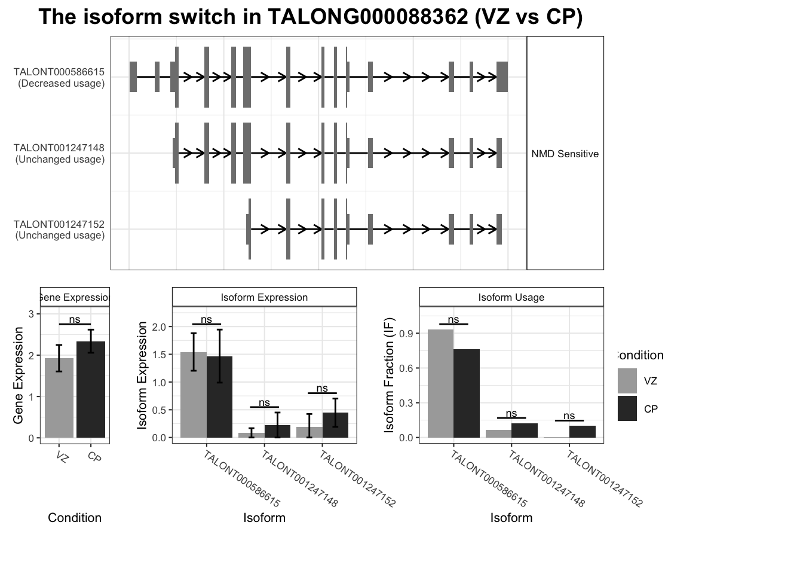
Functional Analysis of Isoform Switches:
pdf(file='output/figures/Fig3/Fig3e.pdf', width=7,height=5)
switch_consequences <- extractConsequenceEnrichment(
talonSwitchList_part2,dIFcutoff = 0,countGenes = F,
returnResult = T # if TRUE returns a data.frame with the summary statistics
)
dev.off()quartz_off_screen
2 write_tsv(switch_consequences, file="output/tables/TableS3_switchConsequences_summary_v2.tsv")
write_tsv(talonSwitchList_part2$switchConsequence, file="output/tables/TableS3_switchConsequences_data.tsv")
consequence = extractConsequenceSummary(
talonSwitchList_part2, includeCombined = T,
dIFcutoff=0, returnResult = T)extractSplicingEnrichment(
talonSwitchList_part2,dIFcutoff = 0,onlySigIsoforms = T,
countGenes = F,
returnResult = TRUE # if TRUE returns a data.frame with the summary statistics
) condition_1 condition_2 AStype nUp nDown propUp
1 VZ CP A3 gain (paired with A3 loss) 603 472 0.5609302
2 VZ CP A5 gain (paired with A5 loss) 526 466 0.5302419
3 VZ CP ATSS gain (paired with ATSS loss) 868 679 0.5610860
4 VZ CP ATTS gain (paired with ATTS loss) 690 544 0.5591572
5 VZ CP ES (paired with EI) 776 1153 0.4022810
6 VZ CP IR gain (paired with IR loss) 266 265 0.5009416
7 VZ CP MEE gain (paired with MEE loss) 4 3 0.5714286
8 VZ CP MES (paired with MEI) 364 587 0.3827550
propUpCiLo propUpCiHi propUpPval propUpQval Significant Comparison
1 0.5306659 0.5908602 7.202013e-05 1.152322e-04 TRUE VZ\nvs\nCP
2 0.4986297 0.5616742 6.097909e-02 8.130545e-02 FALSE VZ\nvs\nCP
3 0.5359374 0.5860023 1.705724e-06 4.548597e-06 TRUE VZ\nvs\nCP
4 0.5309374 0.5870945 3.592843e-05 7.185686e-05 TRUE VZ\nvs\nCP
5 0.3803020 0.4245576 8.845503e-18 7.076402e-17 TRUE VZ\nvs\nCP
6 0.4575691 0.5443036 1.000000e+00 1.000000e+00 FALSE VZ\nvs\nCP
7 0.1840516 0.9010117 1.000000e+00 1.000000e+00 FALSE VZ\nvs\nCP
8 0.3517411 0.4144974 4.775090e-13 1.910036e-12 TRUE VZ\nvs\nCPextractSplicingSummary(talonSwitchList_part2,
splicingToAnalyze = 'all',dIFcutoff = 0,
onlySigIsoforms = T,asFractionTotal = F)Alternative TSS isoform switches
TSS_switches =talonSwitchList_part2$switchConsequence %>% as_tibble() %>%
filter(featureCompared == 'tss', isoformsDifferent==TRUE) %>%
dplyr::select(gene_name, isoformUpregulated, isoformDownregulated) %>%
left_join(talonSwitchList_part2$isoformFeatures %>% dplyr::select(isoformUpregulated=isoform_id, dIF, isoform_switch_q_value)) Joining with `by = join_by(isoformUpregulated)`# Top 10 TSS switches by isoform fraction
TSS_switches%>% arrange(-abs(dIF))# A tibble: 2,452 × 5
gene_name isoformUpregulated isoformDownregulated dIF isoform_switch_q_…¹
<chr> <chr> <chr> <dbl> <dbl>
1 S100A16 ENST00000368705.2_2 ENST00000368706.9_3 0.811 5.86e- 3
2 CPVL TALONT000753261 ENST00000265394.10_3 0.769 7.02e-16
3 ZNF358 ENST00000596712.1_3 ENST00000597229.2_2 0.766 7.57e- 4
4 PLAUR ENST00000340093.8_5 TALONT000368020 0.697 5.55e- 8
5 ELMO1 ENST00000396045.7_2 ENST00000310758.8_2 0.654 1.67e-39
6 ELMO1 ENST00000396045.7_2 ENST00000448602.5_2 0.654 1.67e-39
7 ELMO1 ENST00000396045.7_2 TALONT000761865 0.654 1.67e-39
8 BIN1 ENST00000316724.10_4 ENST00000348750.8_3 0.624 1.51e- 5
9 BIN1 ENST00000316724.10_4 ENST00000393040.7_3 0.624 1.51e- 5
10 BIN1 ENST00000316724.10_4 ENST00000409400.1_4 0.624 1.51e- 5
# … with 2,442 more rows, and abbreviated variable name ¹isoform_switch_q_valuefor(top_genes in TSS_switches %>% arrange(-abs(dIF)) %>% dplyr::select(gene_name) %>%
unique() %>% head(10) %>% pull()) {
switchPlot(
talonSwitchList_part2,
gene=top_genes)
}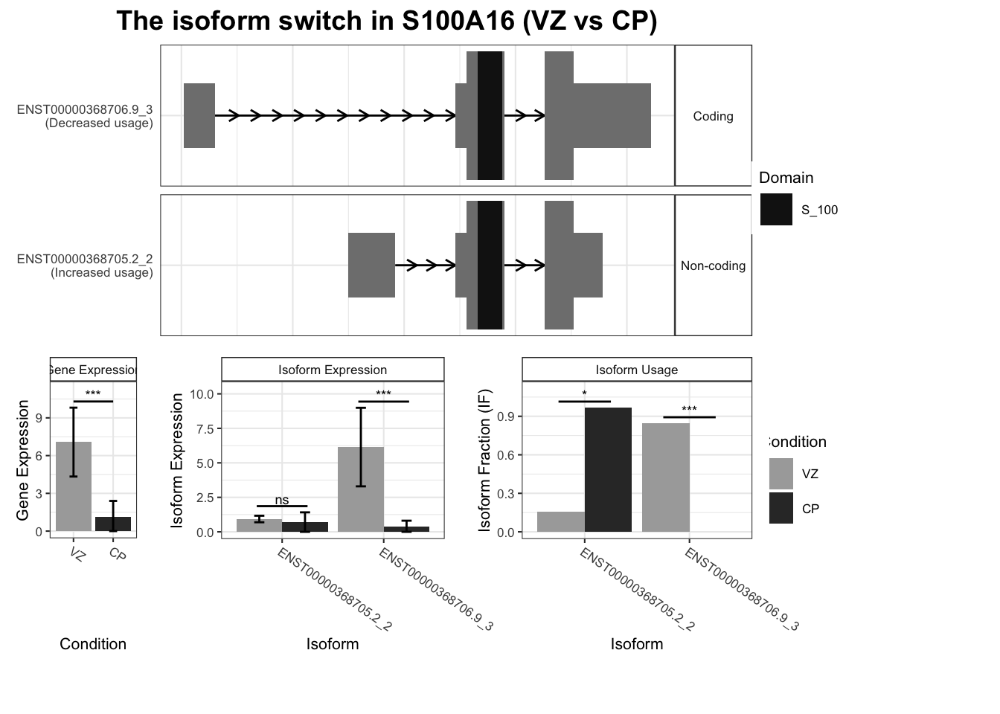
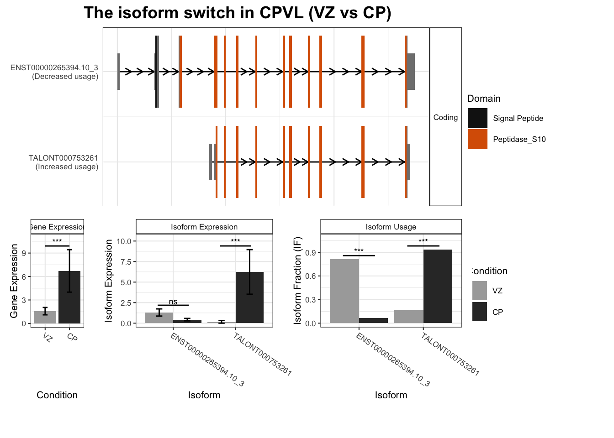
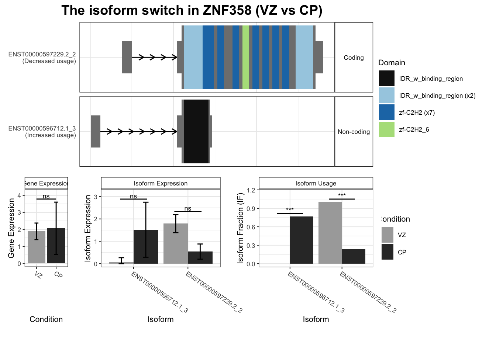
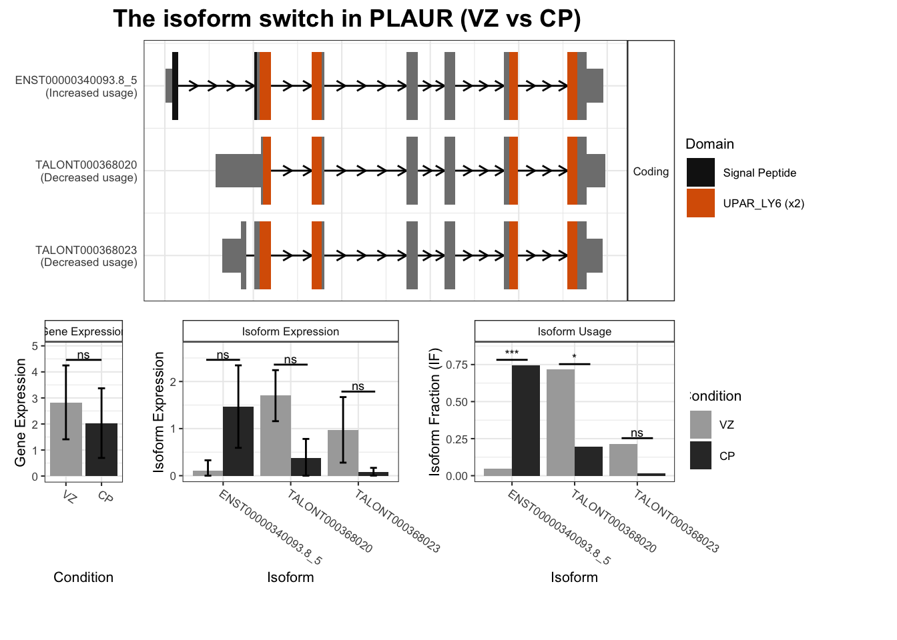
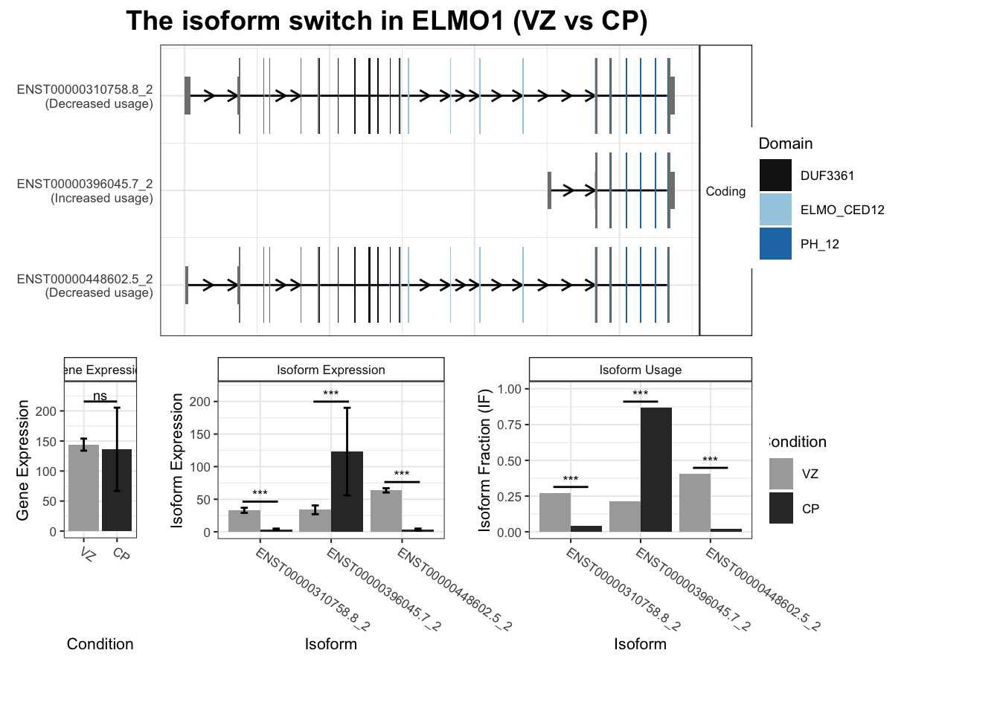
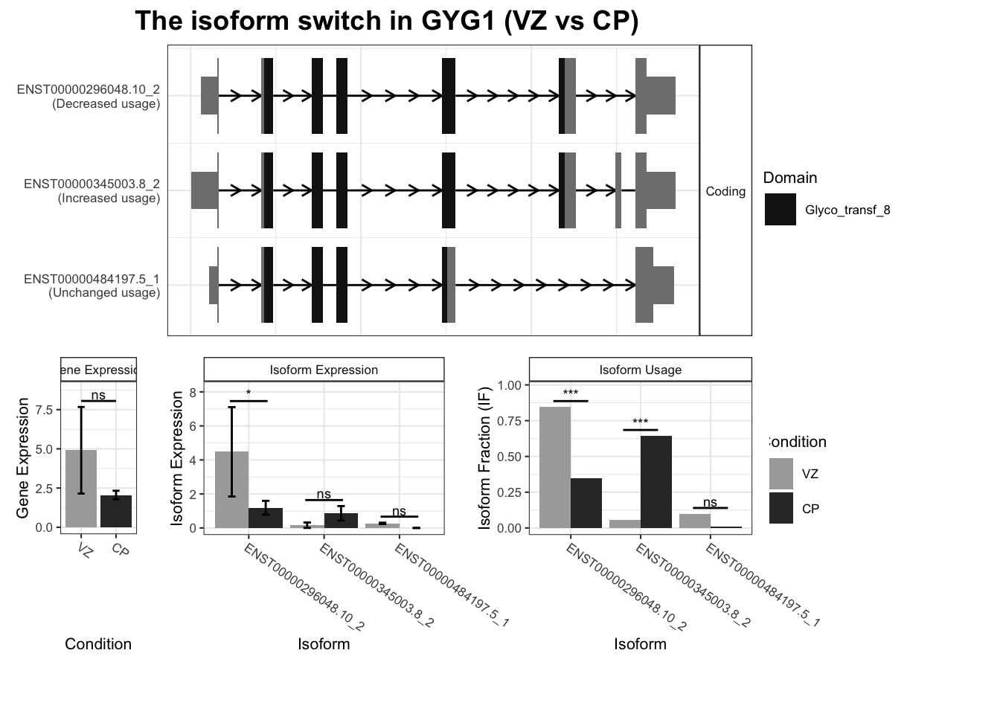

# Top 10 TSS switches by q-value
TSS_switches%>% arrange(isoform_switch_q_value)# A tibble: 2,452 × 5
gene_name isoformUpregulated isoformDownregulated dIF isoform_switch_q_…¹
<chr> <chr> <chr> <dbl> <dbl>
1 CTNNA1 ENST00000540387.5_1 ENST00000302763.12_2 0.197 1.04e-83
2 PKM TALONT000323027 TALONT000323086 0.453 9.72e-73
3 TPM1 ENST00000334895.10_2 ENST00000358278.7_3 0.475 4.54e-65
4 TPM1 ENST00000334895.10_2 ENST00000558868.5_1 0.475 4.54e-65
5 TPM1 ENST00000334895.10_2 ENST00000560959.5_1 0.475 4.54e-65
6 KIF2A ENST00000407818.7_2 ENST00000401507.7_2 0.276 1.96e-54
7 KIF2A ENST00000407818.7_2 TALONT000664196 0.276 1.96e-54
8 ABAT ENST00000396600.6_1 ENST00000268251.13_2 0.317 4.11e-51
9 ABAT ENST00000396600.6_1 ENST00000425191.6_1 0.317 4.11e-51
10 ABAT ENST00000396600.6_1 TALONT000412117 0.317 4.11e-51
# … with 2,442 more rows, and abbreviated variable name ¹isoform_switch_q_valuefor(top_genes in TSS_switches %>% arrange(isoform_switch_q_value) %>% dplyr::select(gene_name) %>%
unique() %>% head(10) %>% pull()) {
switchPlot(
talonSwitchList_part2,
gene=top_genes)
}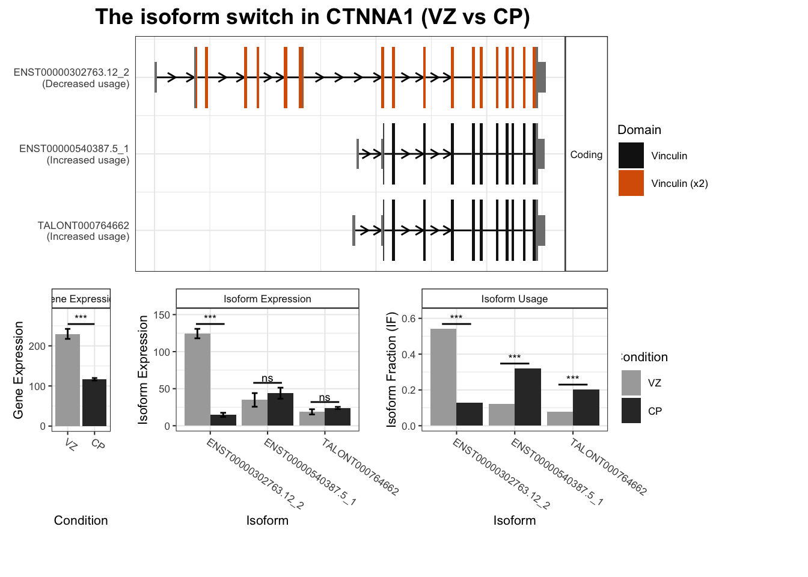
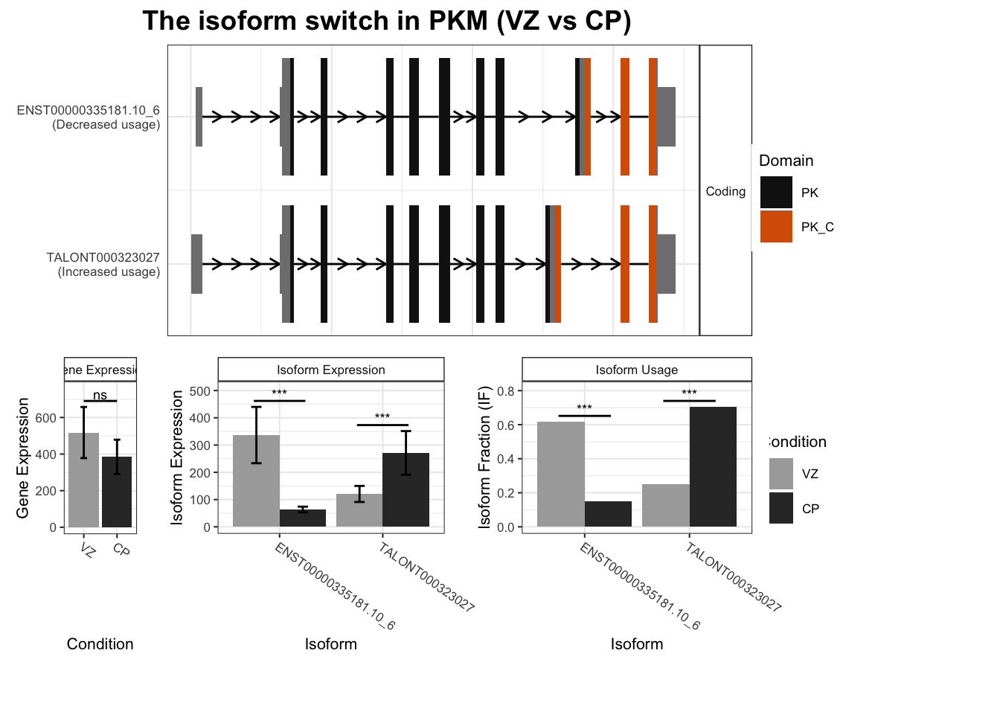
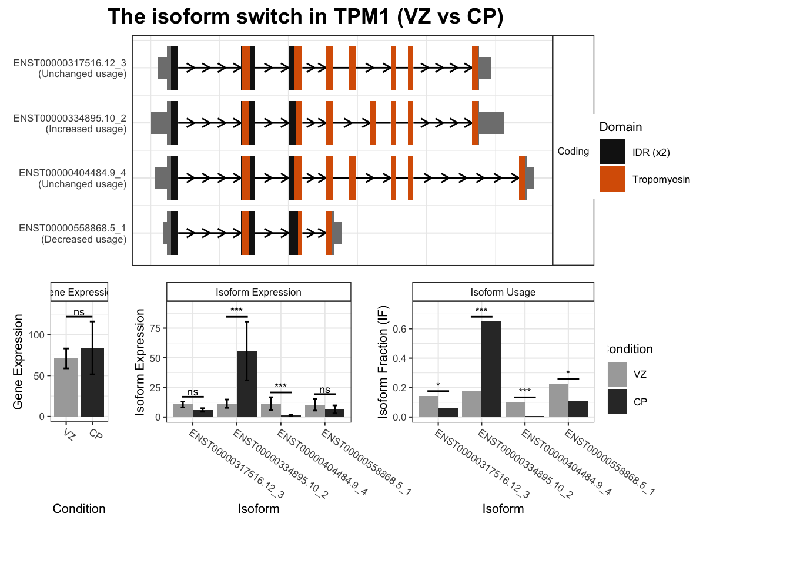
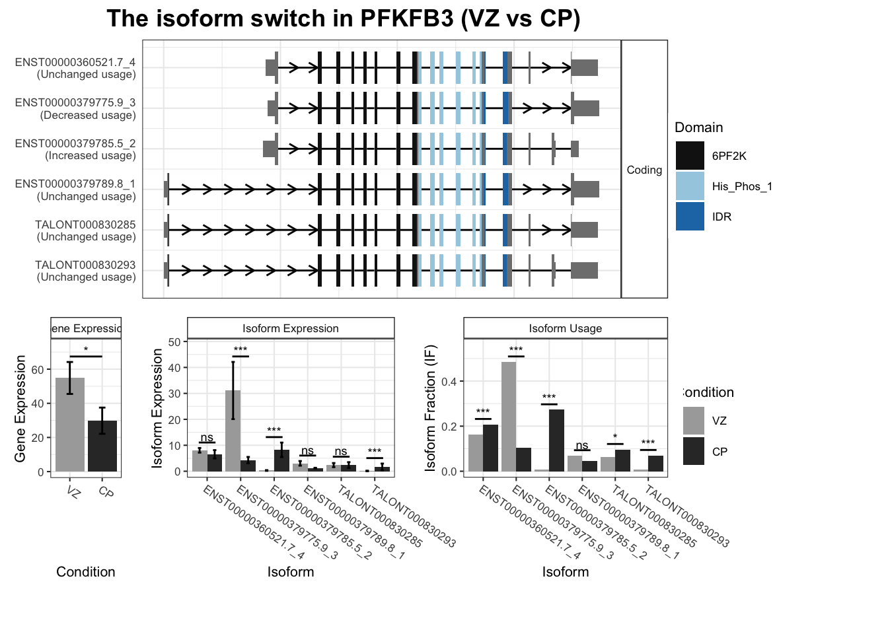

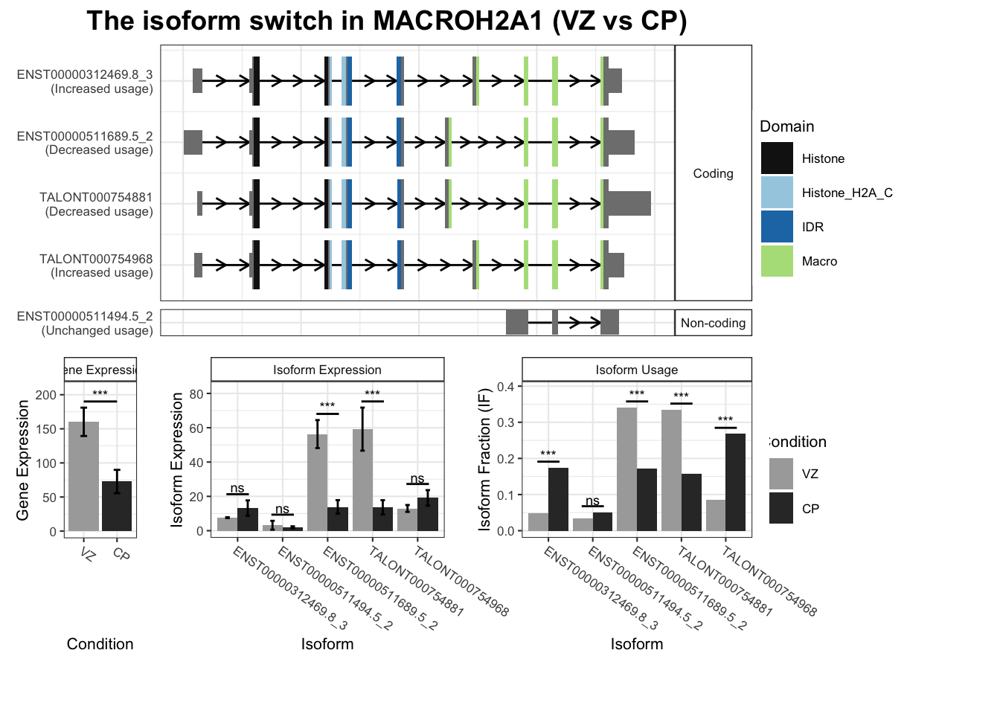
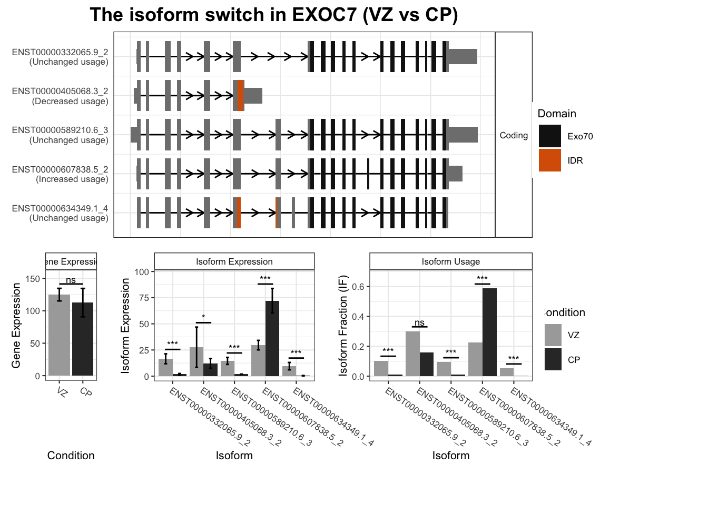
write_tsv(TSS_switches, file="output/tables/TableS3_tss_switches.tsv")Plot interesting disease genes
pdf_path = "output/figures/switch_plots/switch_plots_diseaseGenes.pdf"
if(!file.exists(pdf_path)) {
disease_genes = read.csv('ref/ASD+SCZ+DDD_2022.csv')
interesting_genes = extractTopSwitches(talonSwitchList_part2, filterForConsequences = T, n = Inf)
interesting_genes = interesting_genes$gene_name
interesting_genes = interesting_genes[interesting_genes %in% disease_genes$Gene]
pdf(file=pdf_path)
for(this_gene in interesting_genes) {
switchPlot(
talonSwitchList_part2,
gene=this_gene
)
print(this_gene)
}
dev.off()
}[1] "DPF2"[1] "GTF2I"[1] "ATP6V0A1"[1] "SMARCC2"[1] "TBR1"[1] "ABAT"[1] "AP1S2"[1] "GPHN"[1] "NRCAM"[1] "ELAVL2"[1] "CADM1"[1] "ZEB2"[1] "PRICKLE1"[1] "MYH10"[1] "PROM1"[1] "DNM1L"[1] "PKN2"[1] "ROBO2"[1] "AMPH"[1] "CACNB1"[1] "CDC42"[1] "TSC2"[1] "CELF2"[1] "AKAP9"[1] "SATB1"[1] "POMGNT1"[1] "NCDN"[1] "FGF12"[1] "MAP7"[1] "ZNF711"[1] "FOXP1"[1] "NF1"[1] "APBA2"[1] "PRUNE2"[1] "GNAO1"[1] "KLHL5"Warning: Removed 1 rows containing missing values (`geom_segment()`).
Removed 1 rows containing missing values (`geom_segment()`).[1] "PBX1"[1] "SLC38A10"[1] "ACTN4"[1] "PHLDB1"[1] "FAM174B"[1] "CAMTA1"[1] "PHF14"[1] "PPARGC1A"[1] "DPYSL2"[1] "BRINP3"[1] "ARHGEF7"[1] "ATL1"[1] "ANK3"[1] "NTRK2"[1] "CDIP1"[1] "FOXP2"[1] "HNRNPK"[1] "HOPX"[1] "ZMYND8"Warning: Removed 1 rows containing missing values (`geom_segment()`).
Removed 1 rows containing missing values (`geom_segment()`).[1] "ST7"[1] "TRAPPC9"[1] "MRTFB"[1] "EXOC6"[1] "SPOP"[1] "UBE3A"[1] "RTN4"[1] "PDE1C"[1] "HNRNPF"[1] "NEO1"[1] "RANBP9"[1] "SLC16A9"[1] "TRIM46"[1] "CAMK2B"[1] "NCKAP5"[1] "PLAUR"[1] "TRIM58"[1] "ZMYND11"[1] "SET"[1] "FGF13"[1] "TCF4"[1] "PIK3R1"[1] "KLHL35"[1] "SETBP1"[1] "TBC1D5"[1] "VAMP2"[1] "NADK"[1] "AFF3"[1] "SPEN"[1] "GCA"[1] "PSD3"[1] "EXOC6B"[1] "PPP3CA"Warning: Removed 1 rows containing missing values (`geom_segment()`).
Removed 1 rows containing missing values (`geom_segment()`).[1] "SNX5"[1] "SLC1A2"[1] "ABLIM2"[1] "JADE1"[1] "STX1A"[1] "DNMT3A"[1] "ZNF138"[1] "RAP1GDS1"[1] "IP6K2"[1] "CADM2"[1] "PSMC6"[1] "NELFCD"[1] "TCF20"[1] "CAMK4"[1] "NIPA2"Warning: Removed 2 rows containing missing values (`geom_segment()`).Warning: Removed 2 rows containing missing values (`geom_segment()`).[1] "CACNB4"[1] "TOP3B"[1] "PCDH11X"[1] "PAK1"[1] "TAOK2"[1] "FADS1"[1] "RPP14"[1] "RAB11FIP5"[1] "ABL1"[1] "F8"[1] "CPEB4"[1] "PCDHA6"[1] "ANKS1B"[1] "MAP1A"[1] "DAGLA"quartz_off_screen
2 Plot genes with top switching novel isoforms
pdf_path = "output/figures/switch_plots/Fig3_switch_plots_novelIsoforms.pdf"
if(!file.exists(pdf_path)) {
disease_genes = read.csv('ref/ASD+SCZ+DDD_2022.csv')
switches = talonSwitchList_part2$isoformFeatures %>% left_join(cts %>% dplyr::select(isoform_id=transcript_id, novelty=novelty2))
interesting_genes <- switches %>% filter(novelty!="Known" & isoform_switch_q_value < 10e-15 ) %>% dplyr::arrange(isoform_switch_q_value) %>% dplyr::select(gene_name) %>% pull() %>% unique()
interesting_genes = unique(c(interesting_genes[1:10], interesting_genes[interesting_genes%in% disease_genes$Gene]))
interesting_genes
pdf(file = pdf_path)
for(this_gene in interesting_genes) {
switchPlot(
talonSwitchList_part2,
gene=this_gene
)
print(this_gene)
}
dev.off()
}Joining with `by = join_by(isoform_id)`[1] "ADD1"[1] "PKM"[1] "SMARCC2"[1] "KIF1B"[1] "MYO6"[1] "INTS10"[1] "SEPTIN2"[1] "VCAN"[1] "FNBP1L"[1] "ARVCF"[1] "ELAVL2"[1] "MYH10"[1] "CLTC"[1] "ROBO2"[1] "EIF4A2"[1] "CADM1"[1] "AKAP9"[1] "POMGNT1"[1] "ZEB2"[1] "EIF4G1"[1] "NCDN"[1] "PSAP"[1] "PTK2"[1] "NF1"[1] "APBA2"[1] "KMT2E"quartz_off_screen
2 this is a disgusting hack
strp <- function(x) str_extract(x, "^[^\\.]*")
strippedSwitchList = function(switchList) {
switchList$isoformFeatures$isoform_id <- strp(switchList$isoformFeatures$isoform_id)
switchList[["exons"]]@elementMetadata@listData[["isoform_id"]] <- strp(switchList[["exons"]]@elementMetadata@listData[["isoform_id"]])
switchList$isoformCountMatrix$isoform_id <- strp(switchList$isoformCountMatrix$isoform_id)
switchList$isoformRepExpression$isoform_id <- strp(switchList$isoformRepExpression$isoform_id)
switchList$orfAnalysis$isoform_id <- strp(switchList$orfAnalysis$isoform_id)
switchList$isoformSwitchAnalysis$isoform_id <- strp(switchList$isoformSwitchAnalysis$isoform_id)
switchList$domainAnalysis$isoform_id <- strp(switchList$domainAnalysis$isoform_id)
switchList$idrAnalysis$isoform_id <- strp(switchList$idrAnalysis$isoform_id)
switchList$signalPeptideAnalysis$isoform_id <- strp(switchList$signalPeptideAnalysis$isoform_id)
switchList$AlternativeSplicingAnalysis$isoform_id <- strp(switchList$AlternativeSplicingAnalysis$isoform_id)
switchList$switchConsequence$isoformUpregulated <- strp(switchList$switchConsequence$isoformUpregulated)
switchList$switchConsequence$isoformDownregulated <- strp(switchList$switchConsequence$isoformDownregulated)
return(switchList)
}
talonSwitchList_part2_strp = strippedSwitchList(talonSwitchList_part2)theme_set(theme_gray(base_size = 18))
theme_update(
axis.text = element_text(color="black"),
plot.title = element_text(size = rel(1), hjust = 0.5)
)export at 8 x 6in
switchPlot(talonSwitchList_part2_strp, gene = "KMT2E")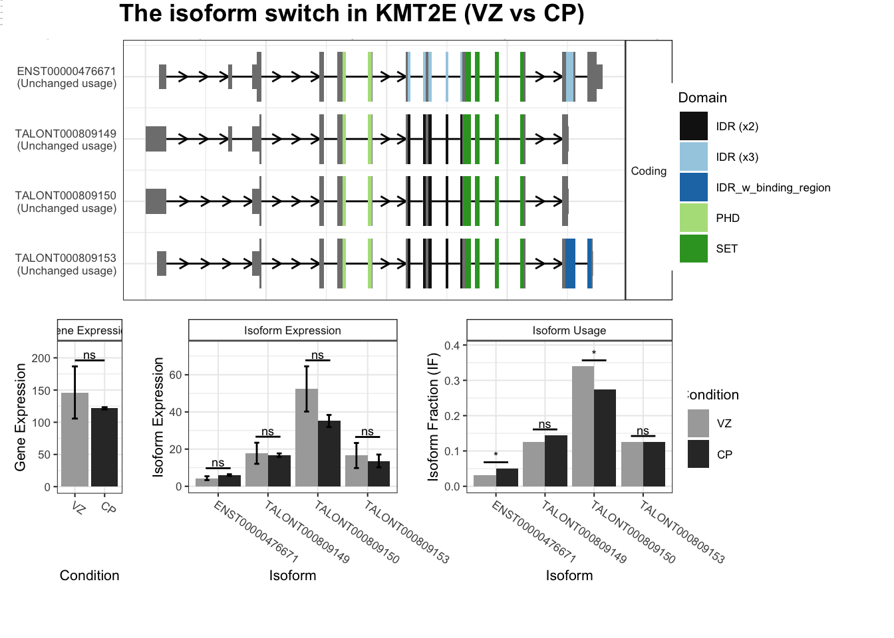
switchPlot(talonSwitchList_part2_strp, gene = "UBE3A")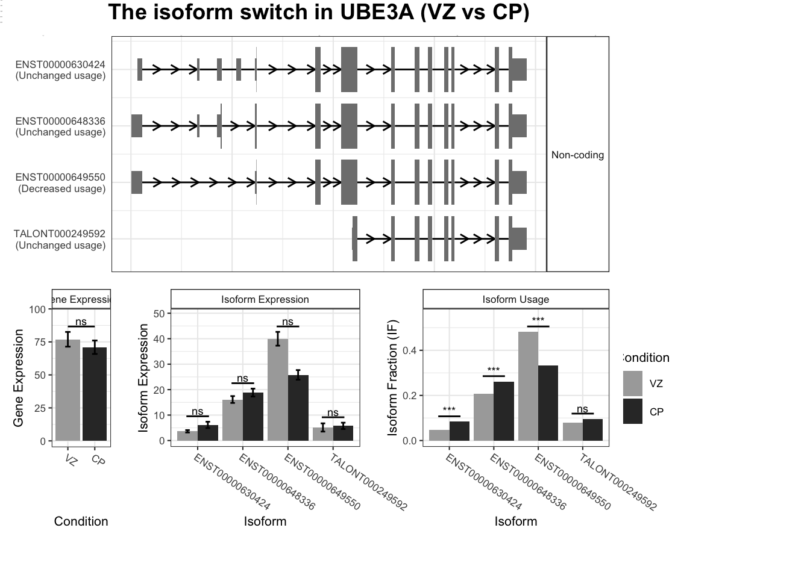